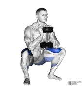
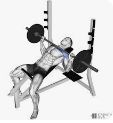
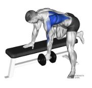
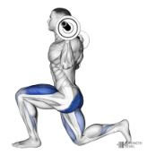
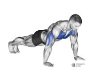
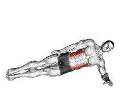

Objectiu: 75 kg
Pes actual: 91 kg
A perdre: 16 kg
Horari feina: 8:00–16:30
Cal. cremades/setm.
15.276 kcal
Ingesta alim./setm.
~13.125 kcal
Dèficit base dieta
~2.150 kcal
Kcal exercici extra
~4.850 kcal
Dèficit total objectiu
7.000 kcal/s
Balanç calòric setmanal
Cremat (metabolisme + exercici)
~20.126
kcal setmanals
Ingerit (alimentació)
~13.125
kcal setmanals
Dèficit total
~7.000
kcal → ~1 kg greix/s
0 kcal dèficit↑ Posició actual (7.000)10.000+ kcal
Important: Un dèficit de 1 kg/setmana és al límit del recomanat. Si et sents molt fatigat o passes gana extrema, puja a 1.900–2.000 kcal/dia i accepta perdre 0,75 kg/setmana. La constància bat la urgència.
Distribució setmanal d'exercici
Dilluns
Gimnas — Tren superior
8:00–16:30 Feina17:00–18:15 Gimnas (75 min)
~550 kcal
Dimarts
Piscina — Cardio i resistència
8:00–16:30 Feina17:00–17:45 Piscina (45 min)
~600 kcal
Dimecres
Gimnas — Tren inferior
8:00–16:30 Feina17:00–18:15 Gimnas (75 min)
~500 kcal
Dijous
Piscina — Intervals (HIIT aquàtic)
8:00–16:30 Feina17:00–17:45 Piscina (45 min)
~650 kcal
Divendres
Gimnas — Full body + Cardio
8:00–16:30 Feina17:00–18:30 Gimnas (90 min)
~700 kcal
Dissabte
Piscina — Sessió llarga (tarda)
Despertar tard (dinar)15:00–16:00 Piscina (60 min)Passejada opcional
90 min · sessió més llarga, inclou 20 min cardio final
0
Escalfament cinta o bici
Ritme moderat, pols a 130–140 ppm
8 min
1

sentadilla_ goblet.jpg
'">
Sentadilla goblet amb mancuerna
Mancuerna al pit, esquena recta
3 × 12
2

press_ inclinat.jpg
'">
Press de banca inclinat
Banc 30–45°, treball pectoral alt
3 × 10
3

rem_ mancuerna.jpg
'">
Rem amb mancuerna unilateral
Genoll al banc, esquena paral·lela
3 × 10
4

estocades .jpg
'">
Estocades amb mancuernes
Pas llarg, genoll davanter no passa el peu
3 × 10 c/u
5

flexions .jpg
'">
Flexions (push-ups)
Pit toca el terra, cos completament recte
3 × màxim
6

planxa_ lateral.jpg
'">
Planxa lateral alternada
30 seg cada costat
3 × 30 seg
7
Cardio final — cinta, bici o el·líptica
Intensitat moderada-alta, zona grassa
20 min
Programa de piscina (3 sessions) — 10 m × 5 m
45 min · ~600 kcal · Cardio de zona grassa
0
Escalfament — crol suau
10 m anada i tornada sense pausa, ritme molt suau
5 min
1
Sèries de longitud — crol continu
10 m anada + tornada = 1 sèrie. Descans 30 seg entre sèries
10 sèries
2
Aquajògging lateral
Corre lateralment d'una paret a l'altra (5 m). Alta resistència
3 × 3 min
3
Sèries braça o esquena
Varia l'estil per activar musculatura diferent
6 sèries
4
Estiraments dins l'aigua
Agafa la paret, estira isquiotibials i esquena
5 min
La piscina de 10 m és perfecta per fer sèries curtes. Cada "longitud" és una anada de 10 m. No cal saber nedar perfectament — aquajògging i crol bàsic cremen igual de bé.
45 min · ~650 kcal · Alta intensitat per intervals
0
Escalfament — crol suau
Ritme molt relaxat, activa el cos
5 min
1
HIIT: sprint 10 m + pausa
Neda / aquajog a màxima intensitat 10 m. Descans 30 seg. Repeteix
10 × 10 m
2
Treball de cames — kicking
Agafia la paret amb els braços, dóna patades de crol 30 seg a màxima velocitat
5 × 30 seg
3
Aquajògging ràpid
Corre d'una paret a l'altra (5 m), alt genoll, braços actius
4 × 2 min
4
Sèries de recuperació — crol suau
Baixa la freqüència cardíaca gradualment
4 sèries
5
Estiraments i respiració
Estira braços, pit i cames. Respira profund
5 min
HIIT a la piscina crema fins a un 30% més que HIIT en terra per la resistència de l'aigua. En 45 min pots cremar 600–700 kcal si mantens la intensitat.
60 min · ~750 kcal · Sessió de tarda (despertar tardà)
0
Escalfament progressiu
Comença molt suau, augmenta el ritme cada 2 min
8 min
1
Crol continu — zona aeròbica
Ritme que et permeti parlar però amb esforç. 10 m anada i tornada continus
20 min
2
Circuit aquàtic (x4 rounds)
Aquajog 2 min + kicking paret 30 seg + crol sprint 10 m + descans 1 min
4 rounds
3
Treball de braços — pull amb pullbuoy
Si en tens, cames immòbils, treball de braços pur
6 sèries
4
Baixada de ritme — neda lliure
Estil lliure, molt suau, últims 5 min de recuperació
8 min
Com el dissabte es desperta tard, la sessió va bé cap a les 15:00–16:00. No cal anar en dejú — espera 1,5–2 h després de dinar abans d'entrar a l'aigua.
Resum calòric setmanal detallat
Dl
Gimnas tren superior (75 min)
Press banca, lat pulldown, rem, braços + 15 min cardio inclinació
~550 kcal
Dm
Piscina cardio base (45 min)
Crol + aquajògging lateral + braça
~600 kcal
Dc
Gimnas tren inferior (75 min)
Sentadilles, pes mort, curl femoral, hip thrust + 15 min cardio
~500 kcal
Dj
Piscina HIIT aquàtic (45 min)
Sprints, kicking, aquajògging d'alta intensitat
~650 kcal
Dv
Gimnas full body (90 min)
Sentadilla, press inclinat, estocades, flexions + 20 min cardio fort
 8 min
8 min